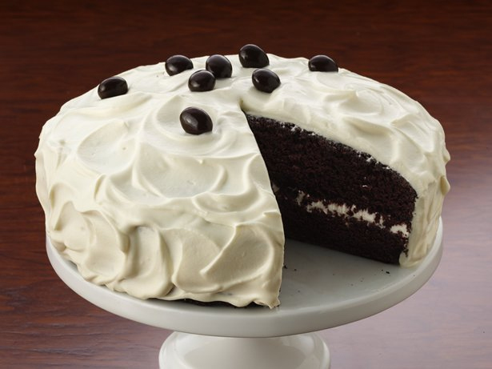

Gluten Free Chocolate Espresso Cake

Gluten free chocolate cake mix marries with coffee for an indulgent and delightful dessert.
Ingredients
- 1 box Betty Crocker® Gluten Free devil's food cake mix
- 1 cup strong coffee or espresso, room temperature
- 1 stick (1/2 cup) butter, softened
- 3 eggs
- 1/2 cup Betty Crocker® Rich & Creamy vanilla frosting
- 2 tablespoons strong coffee or espresso, room temperature
- 1 cup whipping (heavy) cream
- Chocolate covered espresso beans, if desired
Steps
- Heat oven to 350°F (325°F for dark or nonstick pan). Generously grease bottom only of (8- or 9-inch) round pan.
- Beat cake mix, 1 cup coffee, the butter and eggs in large bowl on low speed of electric mixer 30 seconds, then on medium speed 2 minutes, scraping bowl occasionally. Pour into pan. Bake 43 to 48 minutes or until toothpick inserted in center comes out clean. Cool 10 minutes; run knife around inside edges of pan; remove from pan to wire rack. Cool completely.
- In small bowl, stir together frosting and 2 tablespoons coffee; set aside. In large bowl, beat whipping cream to stiff peaks. Beat frosting mixture into whipping cream until stiff enough to spread.
- Cut cooled cake in half horizontally. Place bottom layer, cut side up on serving plate; spread one third of the whipped cream mixture over cake; top with remaining cake half, cut side down. Spread remaining whipped cream mixture over top and side of cake. Arrange espresso beans over cake. Refrigerate at least 1 hour before serving. Refrigerate any remaining cake.